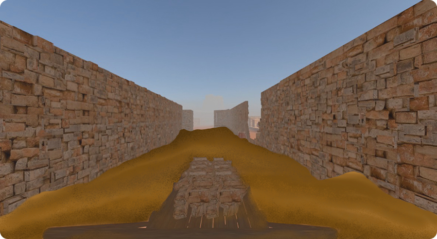
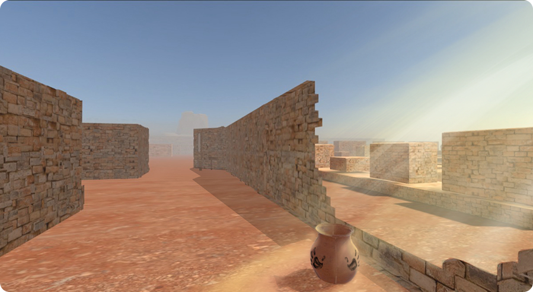
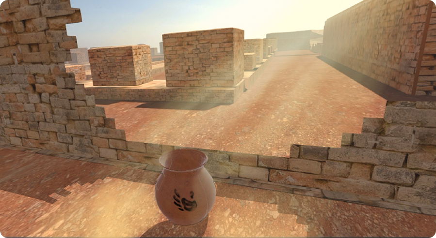
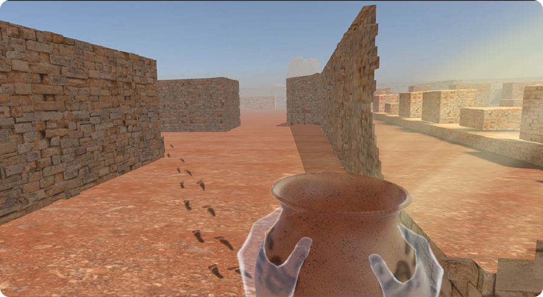
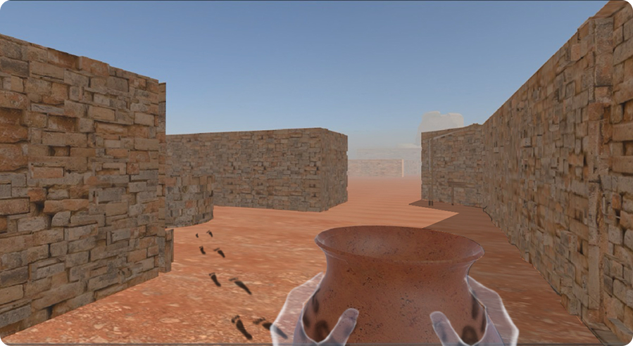
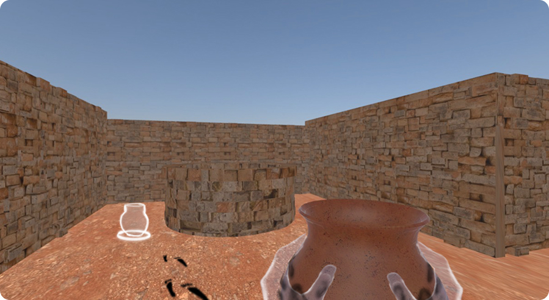
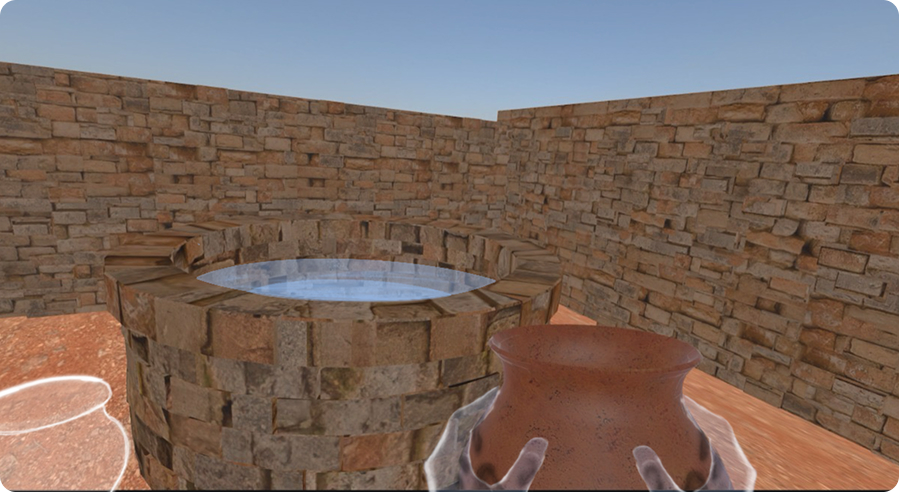
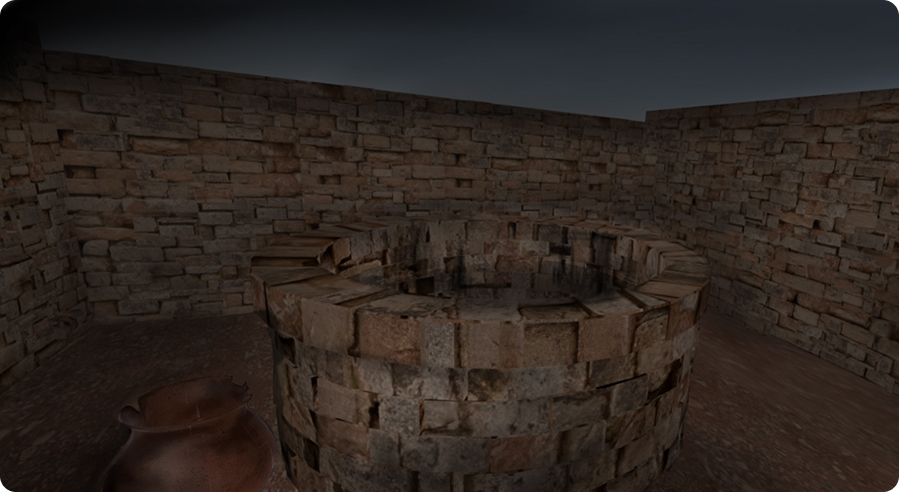
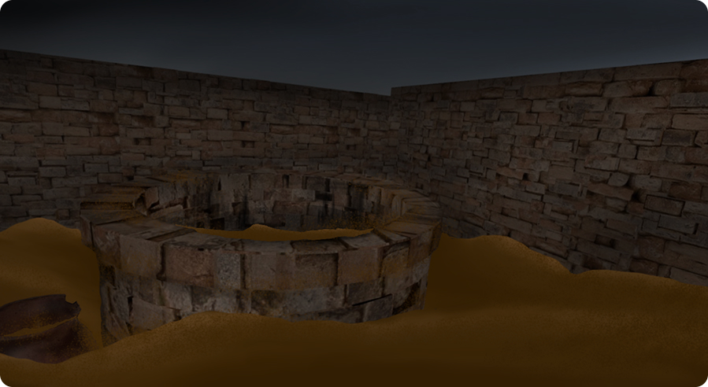

Between Sand and Silence
A multisensory VR installation exploring the disappearance of Mohenjo-Daro.
A player pushes the trolley through the buried corridor.
PROJECT DETAILS
Type: Multisensory VR Installation
Role: Interaction Designer, VR Prototyper
Team: 2 people
Duration: To confirm
Platform: VR (6DoF) + physical installation
Tools: Unity, TouchDesigner, rotary encoder, Blender
Mode: Single Player
WHAT WE FOUND
Mohenjo-Daro was one of the world's first urban civilizations, built around 2500 BCE in the Indus Valley: 40,000 people, grid-planned streets, a water and drainage system more advanced than anything Europe built for another 3,000 years. Around 1900 BCE it was abandoned. No war, no fire, no conquest. Skeletons were found scattered mid-stride in the streets, not buried, just stopped. Their writing has never been decoded. What stayed was the architecture. What disappeared was everything that gave it meaning.
WHY IT INTERESTS US
When British-era construction workers laid railway tracks through the Indus Valley in the 1850s, they found an unusual abundance of ready-made bricks in the ground (fired, uniform, ancient) and used them as ballast for the tracks. Those bricks were Harappan civilization. An entire layer of a 4,000-year-old city was pulled from the earth, loaded onto trolleys, and used for railway construction. The workers carried it without knowing what they were carrying. The city was dismantled a second time, quietly, practically, without ceremony.
The Design Process
Two Separate Ideas. One Experience.
This project is built from two concepts that were prototyped independently and then brought together.


One Corridor. One Pot. One Well. Three Moments of Time.
The player enters the experience as three different people in one continuous journey.
The Labour
They push a trolley through a buried corridor. Sand lifts. Walls rebuild. The city resurrects around them with every step forward.
The Last Person
The trolley stops. They find a clay pot (the only object in the space, with handprints already on it) and carry it toward a well. Footprints appear ahead, stopping mid-stride, two steps before the water's edge. The player walks those last two steps and places the pot.
The Witness
Night. The well is dry. The waterline stain shows where the water once was. Sand returns slowly. Only the pot remains.
Player Flow & Sensorial Mapping
ACT 01 — THE LABOUR
Enters a buried corridor Sand covers the floor, walls are broken, the space feels asleep.
Pushes the trolley Sand lifts, walls rebuild, the city resurrects. Body feels: resistance of the trolley, warmth arriving as real sun on skin.
Trolley stops Corridor fully revealed: sunlight, warm, intact. The player is now standing inside Mohenjo-Daro as it was.
ACT 02 — THE LAST PERSON
Picks up the pot The only object in the space, with handprints already pressed into the clay. Body feels: real clay, real weight.
Follows the footprints Someone already walked this path. Body feels: eyes follow the trail, body walks the path. The footprints stop mid-stride, two steps before the well's edge. The person who made them never reached the water.
Walks the last two steps, places the pot The well is full of water. A worn impression at the rim is the exact shape of the pot's base. Body feels: cold wind hits, sudden and full body.
ACT 03 — THE WITNESS
Cold wind. The scene shifts to night, 4,000 years in one breath. Same corridor, same well, water gone, sand returning, footprints gone. Only the pot remains, the one thing that survived because they completed it. Body feels: eyes see nothing, the well completely dry.
The Installation Space


Experience Storyboard
01 — Buried Corridor
DayPlayer enters. Sand everywhere, walls broken, a trolley in front of them.
Audio: silence and wind reflect the stillness of a once-inhabited civilization. Pushing forward controls time itself.

02 — Pushing Forward
DayAs the trolley moves, sand goes down and walls rebuild around them. The civilization comes back.
Audio: the silence fades, gradually replaced by the sounds of people and daily life.

03 — The Pot
DayA clay pot near a broken wall. Sunlight falls on it, the only object in the space. Player approaches.
Audio: the sounds of people and daily activity make the space feel active and inhabited.

04 — Handprints
DayPlayer reaches out. Handprints are already pressed into the clay: someone held this before.
Audio: silence gives way to the sounds of daily life, bringing the civilization back.

05 — Footprints Appear
DayAs the pot is lifted, footprints appear ahead, leading toward the well: a trail already walked.
Audio: city sounds fade into silence, leaving only footsteps to guide the way.

06 — Following the Trail
DayPlayer follows. The trail is long. The well comes into view, full of water and reflecting light.
Audio: footsteps suggest the presence of someone who once walked this path.

07 — Footprints Stop
DayTwo steps before the well's edge, mid-stride. The person who made them never arrived.
Audio: the footsteps abruptly stop into silence, an unfinished journey.

08 — The Last Two Steps
DayA UI prompt highlights the pot the player carries. It must now be used to continue the act.
Audio: only wind, creating emptiness and tension as the well approaches.

09 — The Shift
TransitionCold wind. The scene turns to night. The well is completely dry, with only a waterline stain remaining.
Audio: the sound of the pot placing fades into silence and heavy wind.

10 — The Witness
NightSand slowly returns, footprints gone. Only the pot remains where it was placed: the bricks are no longer just objects.
Audio: heavy wind and flowing sand restore the emptiness of the ruins.

REFLECTION
"This project pushed the idea that history is felt through the body, not read off a wall label. Pairing a real trolley and real cold air with the VR meant the weight of what was lost didn't stay abstract. It arrived as resistance in your hands and cold on your skin."